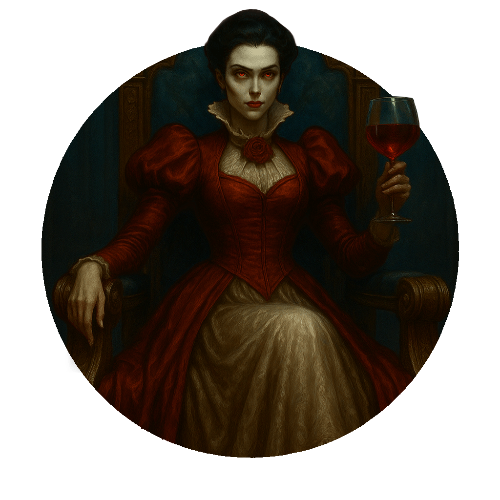
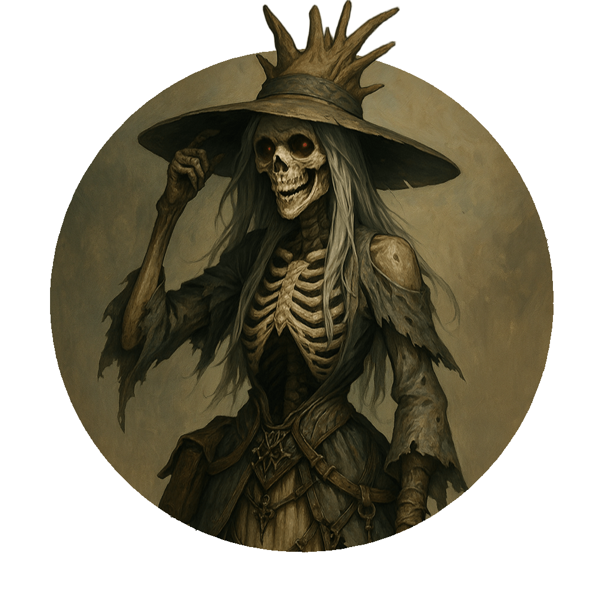

Cripta di Sangue
"Coloro che varcano la soglia lasciano ogni speranza, tranne quella della vendetta."
Anime e Presenze

Rabberduscolanderson
L'OsservatoreCustode di antichi segreti e memorie frammentate. Si aggira nell'ombra, sussurrando verità che nessuno vuole sentire.

Karla
?? Ruolo da Definire ??Una presenza che non passa inosservata.

X
L'IncognitoPoco si sa di questa figura enigmatica. Le sue intenzioni rimangono avvolte nel mistero.
Zara
?? Ruolo da Definire ??Dettagli su Zara...
La lista delle anime si allunga...